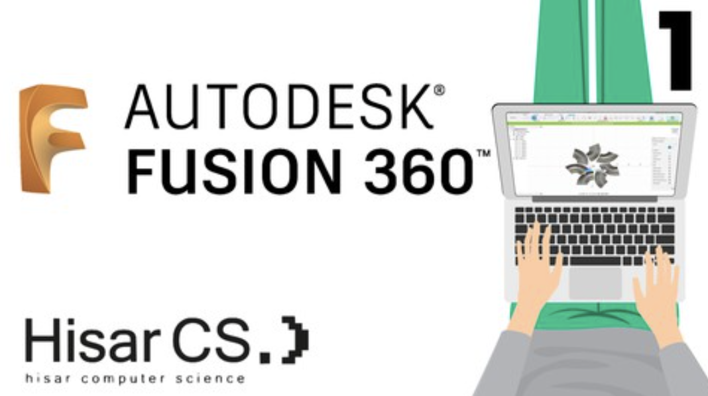
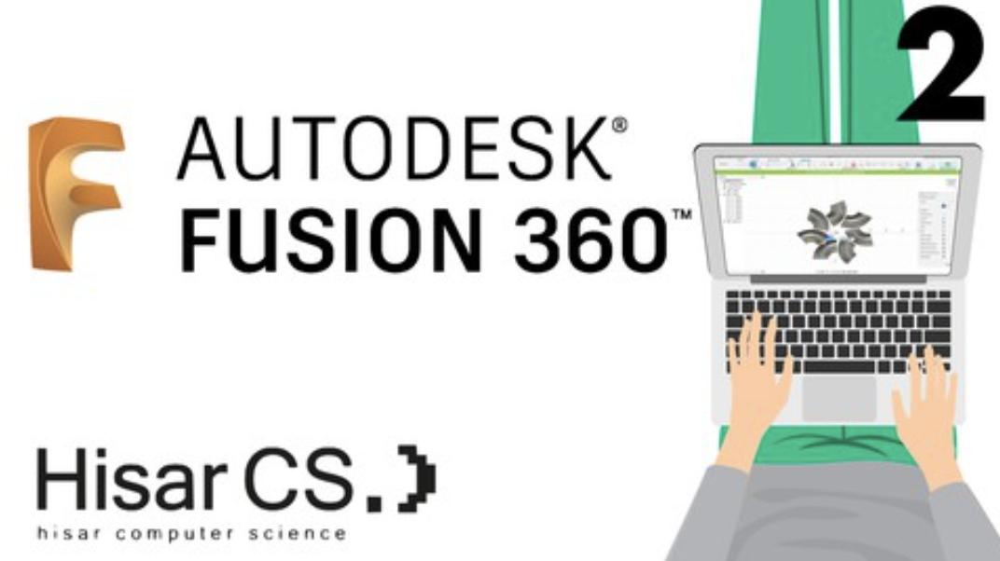
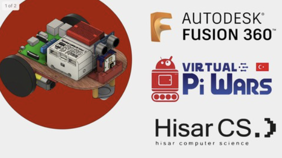
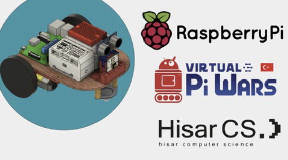

You can access the free Udemy Courses prepared by the Hisar CS team.
Introduction to Programming with Python

Rapid Prototyping with Fusion 360 (1)

Rapid Prototyping with Fusion 360 (2)

Raspberry Pi Based Robot: Modelling with Fusion 360

Raspberry Pi Based Robot: Electronics with RasPi